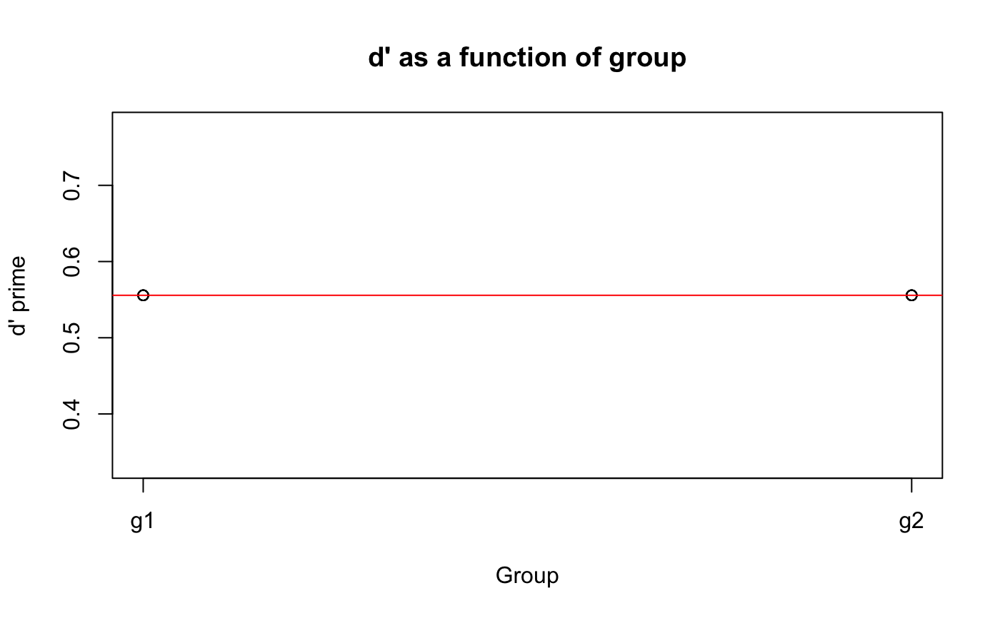

This function will calculate d prime from a vector of hits and a vector of false alarms.
dPrime(data, h, f)
| data | A data frame. |
|---|---|
| h | A vector of hits (0 = miss, 1 = hit). |
| f | A vector of false alarms (0 = correct rejection, 1 = false alarm). |
This metric is common in discrimination experiments. Note: If your participants are at ceiling, you may want to consider another analysis.
# Create some data set.seed(1); library(dplyr) axb <- data.frame(subj = sort(rep(1:10, each = 20, times = 10)), group = gl(2, 1000, labels = c("g1", "g2")), hit = c(rbinom(1000, size = c(0, 1), prob = .8), rbinom(1000, size = c(0, 1), prob = .6)), fa = c(rbinom(1000, size = c(0, 1), prob = .3), rbinom(1000, size = c(0, 1), prob = .4)) ) # Calculate d prime on entire data frame dPrime(axb, hit, fa)#> [1] 0.5557056# Calculate d prime for each subject by group, plot it, # and run a linear model library(dplyr) axb %>% group_by(subj, group) %>% summarize(dp = dPrime(., hit, fa)) %T>% { plot(dp ~ as.numeric(group), data = ., main = "d' as a function of group", xaxt = "n", xlab = "Group", ylab = "d' prime") axis(1, at = 1:2, labels = c("g1", "g2")) abline(lm(dp ~ as.numeric(group), data = .), col = "red") } %>% lm(dp ~ group, data = .) %>% summary()#>#> Warning: essentially perfect fit: summary may be unreliable#> #> Call: #> lm(formula = dp ~ group, data = .) #> #> Residuals: #> Min 1Q Median 3Q Max #> 0 0 0 0 0 #> #> Coefficients: #> Estimate Std. Error t value Pr(>|t|) #> (Intercept) 0.5557 0.0000 Inf <2e-16 *** #> groupg2 0.0000 0.0000 NA NA #> --- #> Signif. codes: 0 ‘***’ 0.001 ‘**’ 0.01 ‘*’ 0.05 ‘.’ 0.1 ‘ ’ 1 #> #> Residual standard error: 0 on 8 degrees of freedom #> Multiple R-squared: NaN, Adjusted R-squared: NaN #> F-statistic: NaN on 1 and 8 DF, p-value: NA #>